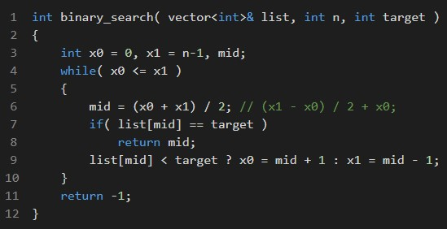
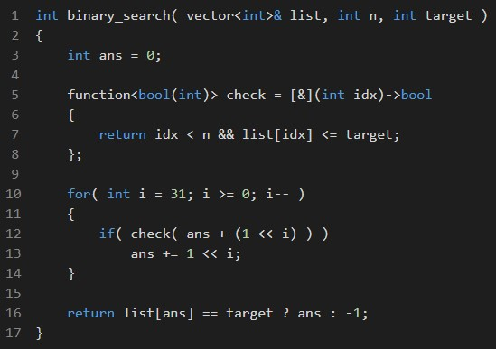
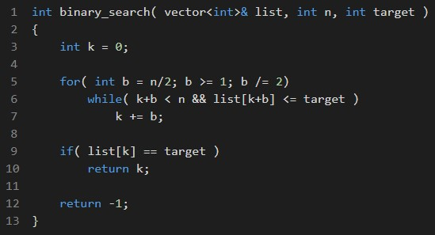

Binary Search
Previous lesson: Bit Manipulation
Following lesson: Dynamic Programming
Contents
- The searching problem
- How to implement Binary Search
- Built-in C++ Binary Search functions
- Problems to practice!
The searching problem
The search problem consists of finding a value contained in a particular set of records.
No matter the scope we're talking about, searching is a basic operation.
Let's start with the fact that we have an amount of information, for example, a bunch of numbers. Searching is the general given name
for knowing things about my data abstract idea. When you have to explore the information, know about its distribution,
if you have a certain element, how many elements of one kind you have, or if you want to get the element itself, you search.
Depending on what we're searching for, the search operation receives different names:
- Search - To know if a certain element is in the collection.
- Retrieve - To get the element associated with a certain key.
- Locate - To get the position of a certain element that is in the collection.
- Count - To know how many appearances a certain element has in the collection.
The way you have stored the information is relevant to how you search for it, and the general purpose of that data collection is also relevant. There are mainly four types of searching depending on this:
- Secuential: For linear data structures - Linear Search & Binary Search \( O(n), O(log_2(n)) \)
- Direct Access: Hash table - \( O(1) \)
- Tree-indexed: Binary Search Tree - \( O(log_2(n)) \)
- Explosive (rapid growth): Brute force solutions to NP-complete problems, graph search, evaluation of permutation/combinations - TSP, Subset Sum Problem... \( O(2^n), O(n!) \)
We'll be focusing on sequential searching, (usually) when we want to search for an element on a linear collection
such as a linked list, or the pretty common std::vector. The first approach and general method to do so is to
check every element from the first index, to the last one. Going through every element once, and evaluating whatever we're interested in.
This is called linear search (LS). LS is good in its purpose, but as its name shows, have a time complexity of \( O(n) \) being n the collection size,
which is too slow most of the time for contest problems, where bounds are usually \( n \leq 10^5 \), with \( 10^5 \) operations to do over n.
This means \( 10^{10} \) operations to do in \( 10^8 \) operations per second our second (time-bound limit) let us do.
LS can be seen as the brute force way to search since it doesn't have any optimizations or... even any strategy. So, of course, there is a better option.
The efficient LS alternative is called Binary Search (BS).
How to implement Binary Search
The classic way to implement Binary Search resembles looking for a word in a dictionary. If you're searching for the word Potato, and you're currently
on the letter 'M', it's easy to see you have to look forward, in the interval [N,Z], and discard the elements where you know your word isn't (interval [A,M]).
That's mainly the reason why your collection needs to be previously sorted, BS uses the information that you're elements have been processed in some way earlier
(has been sorted) instead of working with them raw as LS could do. In general, the more you previously prepare the data, the faster can search for it (the proof of this
is the Hash table).
The fastest way to do the previously explained is cutting in half the collections recursively. You compare if the element at the half of your collection is the
wanted element, if so, you're done! If not, you need to repeat it on the half that contains the element. If the current (mid) element is lower than the target, you
have to search on the right half, in the other way, search on the left half. Doing these steps continuously will end up finding at some point the target.
Of course, your implementation must be sensitive to certain corner cases: what happens when the target isn't in the collection?
What when you have more than one appearance of the target in the collection?
A general implementation of BS this way follows:

There exists an alternative method to implement BS based on an efficient way to iterate through the elements of the array.
The idea is to make jumps and slow the speed when we get closer to the target element.
The length of these steps follows the main idea of BS, cut it in half.
If your collection size is \( n \), the first jump is at position
\( \frac{n}{2} \), the next one will be at position \( \text{previous position} + \frac{n}{4} \),
the next one \( \text{previous position} + \frac{n}{8} \)
and so on until you reach \( \text{previous position} + 1 \), meaning you have potentially passed for every logarithmic jump
and virtually, for every element on your collection.
This algorithm works the same way you can create every number \( n \in [0,2^8-1] \) (\( n \in [0,255] \)) using a byte.
Let's say you want to create the number 173, one way to do this is by checking every bit from the left-most position (the most significant one)
to the right-most position (the least significant one) and checking if your current number exceeds 173, if so, ignore it because
you can only add quantities to your number and there's no way to form a smaller number from a bigger one just adding, if it doesn't exceed it
then add that bit to you current number.
Let's try this out:
1.° Iteration
Current number: 0 \( \rightarrow 00000000\)
Current bit: \( 1 << 7 = 128 \)
¿\( 0 + 128 = 128 > 173 \)?
No \( \Rightarrow \) Add it.
2.° Iteration
Current number: 128 \( \rightarrow 10000000\)
Current bit: \( 1 << 6 = 64 \)
¿\( 128 + 64 = 192 > 173 \)?
Yes \( \Rightarrow \) Don't add it.
3.° Iteration
Current number: 128 \( \rightarrow 10000000\)
Current bit: \( 1 << 5 = 32 \)
¿\( 128 + 32 = 160 > 173 \)?
No \( \Rightarrow \) Add it.
4.° Iteration
Current number: 160 \( \rightarrow 10100000\)
Current bit: \( 1 << 4 = 16 \)
¿\( 160 + 16 = 176 > 173 \)?
Yes \( \Rightarrow \) Don't add it.
5.° Iteration
Current number: 160 \( \rightarrow 10100000\)
Current bit: \( 1 << 3 = 8 \)
¿\( 160 + 8 = 168 > 173 \)?
No \( \Rightarrow \) Add it.
6.° Iteration
Current number: 168 \( \rightarrow 10101000\)
Current bit: \( 1 << 2 = 4 \)
¿\( 168 + 4 = 172 > 173 \)?
No \( \Rightarrow \) Add it.
7.° Iteration
Current number: 172 \( \rightarrow 10101100\)
Current bit: \( 1 << 1 = 2 \)
¿\( 172 + 2 = 174 > 173 \)?
Yes \( \Rightarrow \) Don't add it.
8.° Iteration
Current number: 172 \( \rightarrow 10101100\)
Current bit: \( 1 << 0 = 1 \)
¿\( 172 + 1 = 173 > 173 \)?
No \( \Rightarrow \) Add it.
The, the final number is: 173 \( \rightarrow 10101101\)
If you want to see it like this, we binary searched the number \( 173 \) on the sorted list that contains all the integers between \( [0,255] \).
As you can see, it's a good idea to use bit manipulation to do the logarithmic jumps over the elements in the collection every time
the size of our collection fits the number we're bitwise. Most of the time in contests this bound is \( 10^5 \), and a 32-bit unsigned integer
can hold \( \approx 4 \times 10^9 \), so we're good in most of the cases.
One implementation of BS this way follows, the function check is useful when the problem is more abstract than pure numbers:

If Bitwise makes it confusing, there's another equivalent implementation originally made by Antti Laaksonen in Competitive Programmer's Handbook.

We haven't mentioned it before, but as you can see, Binary Search boasts a complexity of:
\[ O(log_2(n)) \]
Which is surprisingly good when the input grows in size, but let's not celebrate it yet, because we also have said that BS need to accomplish
a previous requirement: the collection needs to be sorted, and this adds an extra complexity, so in general we have:
\[ T(n) = nlog(n) + log(n) \]
Which is visible greater than the alternative LS \( O(n) \).
Why use binary search then?
In general, the search operation is often used more than once, even more in contests. Let's suppose you have an input of size \( n \leq 10^5 \),
where you have to make \( q \leq 10^5 \) queries over \( n \). This means, in other words, that you have to do \( q \) operations over \( n \).
If the operation is LS, then you have to LS \( q \) times over \( n \), which can be translated as
\[ q \times O(n) = 10^5 \times 10^5 = 10^{10} > 10^8\]
that won't pass on complexity because the solutions complexity is \( O(n^2) \).
On the other hand, if we use BS instead, we have to sort once (pre-processing), then all the queries will be on logarithmic time:
\[ O(nlog(n)) + q \times O(log(n)) \]
that is
\[ 10^5 \times log_2(10^5) + 10^5 \times log_2(10^5) = \]
\[ = 2 \times 10^5 \times 17 = 32 \times 10^5 < 10^8 \]
Clearly better with a solution complexity \( O(nlog(n)) \).
Built-in C++ Binary Search functions
It is important for us to know how BS works, and how to implement it correctly. But as competitors, we must be fast while implementing solutions
and we may know the C++ implemented functions to BS.
There are three of them, they're defined as follows:
- std::binary_search
- std::lower_bound
- std::upper_bound
binary_search
Default definition:
bool binary_search(ForwardIterator first, ForwardIterator last, const T& val);
Custom comparator definition:
bool binary_search(ForwardIterator first, ForwardIterator last, const T& val, Compare comp);
Test if value exists in sorted sequence.
Returns a bool (true) depending if any of the elements in the range
\( [first, last) \) are equivalent to val, or false otherwise.
Example: if(binary_search(v.begin(),v.end(),5)) cout << "v contains 5!" << endl;
lower_bound
Default definition:
ForwardIterator lower_bound(ForwardIterator first, ForwardIterator last, const T& val);
Custom comparator definition:
ForwardIterator lower_bound(ForwardIterator first, ForwardIterator last, const T& val, Compare comp);
Returns an iterator pointing to the first element in the range \( [first, last) \) which does not compare less than val.
Returns an iterator pointing to the first element greater than, or equal than val.
If val exists, lower_bound points to the first occurrence of val.
If val doesn't exist, lower_bound points to the first element greater than val.
If such value doesn't exist (all the elements on the interval compare less than val), returns the end iterator.
Example: vector<int>::iterator it = lower_bound(v.begin(),v.end(),5);
upper_bound
Default definition:
ForwardIterator upper_bound(ForwardIterator first, ForwardIterator last, const T& val);
Custom comparator definition:
ForwardIterator upper_bound(ForwardIterator first, ForwardIterator last, const T& val, Compare comp);
Returns an iterator pointing to the first element in the range \( [first, last) \) which compares greater than val.
If val exists, upper_bound points to the element following to the last equal to val.
If val doesn't exist, upper_bound points to the first element greater than val.
If such value doesn't exist (all the elements on the interval compare less or equal than val), returns the end iterator.
Example: vector<int>::iterator it = upper_bound(v.begin(),v.end(),5);
Let's keep in mind that the returned elements of both lower_bound and upper_bound
are iterators. So, to work with both of them, you need to know how iterators work too. An iterator is like a C pointer in some way, let's keep that in mind.
Here are some common uses for iterators:
- You can know the value your iterator is pointing at using the indirection operator (\(*\)): *it.
- You can use pointer arithmetic adding or subtracting integers to your iterator: it++, it--.
- You can know the index where your iterator is pointing to, by subtracting it minus begin iterator: it - v.begin().
- You can know the number of appearances of a certain element, by subtracting upper_bound minus lower_bound.
Problems to practice!

Codeforces 432A - Choosing Teams
Codeforces 1676E - Eating Queries
Codeforces 474B - Worms
Codeforces 1791G1 - Teleporters (Easy Version)
Codeforces 1791G2 - Teleporters (Hard Version)
Codeforces 1985F - Final Boss